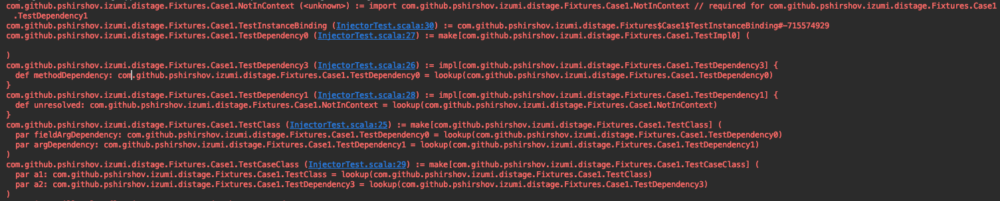

distage Staged Dependency Injection
distage is a modern dependency injection framework for Scala.
Combining type safety, ease composition and separation of declaration from execution from FP, and late binding, modularity and scalability from OOP, distage brings together a fusion that retains safety and clarity of pure FP without sacrificing full runtime flexibility and configurability of traditional runtime dependency injection frameworks such as Guice.
Hello World
This is what Hello World looks like in distage:
import distage._
class Hello {
def hello(name: String) = println(s"Hello $name!")
}
object HelloModule extends ModuleDef {
make[Hello]
}
object Main extends App {
val injector = Injector()
val plan = injector.plan(HelloModule)
val classes: Locator = injector.produce(plan)
println("What's your name?")
val name = readLine()
classes.get[Hello].hello(name)
}
Let’s take a closer look:
object HelloModule extends ModuleDef {
make[Hello]
}
We define a Module for our application. A module specifies what classes to instantiate and how to instantiate them.
In this case we are using the default instantiation strategy - just calling the constructor.
If a constructor accepts arguments, distage will first instantiate the arguments, then call the constructor. All the classes in distage are instantiated exactly once, even if multiple different classes depend on them, in other words they are Singletons.
Modules can be combined using ++ operator, for example we can join our HelloModule with a ByeModule:
object ByeModule extends ModuleDef {
make[Bye]
}
class Bye {
def bye(name: String) = println(s"Bye $name!")
}
val helloBye = HelloModule ++ ByeModule
Combining modules with ++ is the main way to assemble your app together! But, if you don’t want to list all your modules in one place, you can use Plugins to automatically discover all the (marked) modules in your app.
If you choose to combine your modules manually, distage offers compile-time checks ensuring that your app will start. See Static Configurations for details.
object Main extends App {
val injector = Injector()
val plan = injector.plan(HelloModule)
We create an instantation plan from the module definition. distage is staged, so instead of instantiating our definitions right away, distage first builds a pure representation of all the operations it will do and returns it back to us.
This allows us to easily implement additional functionality on top of distage without modifying the library. In fact, distage’s built-in functionality such as Plugins and Configurations is not hard-wired, but is built on this framework of manipulating the plan. Plan rewriting also enables the Import Injection Pattern that helps limit side effects during initialization.
val classes: Locator = injector.produce(plan)
classes.get[Hello].helloWorld()
After we execute the plan we’re left a Locator that holds all of our app’s classes. We can retrieve the instances by type using the .get method
Multibindings / Set Bindings
Multibindings are useful for implementing event listeners, plugins, hooks, http routes, etc.
To define a multibinding use .many and .add methods in ModuleDef DSL:
import cats.effect._, org.http4s._, org.http4s.dsl.io._, scala.concurrent.ExecutionContext.Implicits.global
import distage._
object HomeRouteModule extends ModuleDef {
many[HttpRoutes[IO]].add {
HttpRoutes.of[IO] { case GET -> Root / "home" => Ok(s"Home page!") }
}
}
Multibindings defined in different modules will be merged together into a single Set. You can summon a multibinding by type Set[_]:
import cats.implicits._, import org.http4s.server.blaze._, import org.http4s.implicits._
object BlogRouteModule extends ModuleDef {
many[HttpRoutes[IO]].add {
HttpRoutes.of[IO] { case GET -> Root / "blog" / post => Ok("Blog post ``$post''!") }
}
}
class HttpServer(routes: Set[HttpRoutes[IO]]) {
def serve = BlazeBuilder[IO]
.bindHttp(8080, "localhost")
.mountService(routes.fold[HttpRoutes[IO]], "/")
.start
val count = routes.size
}
val context = Injector().run(HomeRouteModule ++ BlogRouteModule)
val server = context.get[HttpServer]
server.count // 2
For further detail see Guice wiki on Multibindings.
Provider Bindings
To bind to a function instead of constructor use .from method in ModuleDef DSL:
case class HostPort(host: String, port: Int)
class HttpServer(hostPort: HostPort)
trait HttpServerModule extends ModuleDef {
make[HttpServer].from {
hostPort: HostPort => new HttpServer(hostPort.host, hostPort + 1000)
}
}
To inject named instances or config values, add annotations to lambda arguments’ types:
trait HostPortModule extends ModuleDef {
make[HostPort].from {
(configHost: String @ConfPath("http.host"), configPort: Int @ConfPath("http.port")) =>
HostPort(configHost, configPort)
}
}
For further details, see scaladoc for ProviderMagnet
Tagless Final Style with distage
distage has first-class support for tagless final style. Let’s see what freestyle tagless example looks like in distage:
class Program[F: TagK: Monad] extends ModuleDef {
make[TaglessProgram[F]]
}
object TryInterpreters extends ModuleDef {
make[Validation.Handler[Try]].from(tryValidationHandler)
make[Interaction.Handler[Try]].from(tryInteractionHandler)
}
// Combine modules into a full program
val TryProgram = new Program[Try] ++ TryInterpreters
where
class TaglessProgram[F[_]: Monad](validation: Validation[F], interaction: Interaction[F]) {
def program = for {
userInput <- interaction.ask("Give me something with at least 3 chars and a number on it")
valid <- (validation.minSize(userInput, 3), validation.hasNumber(userInput)).mapN(_ && _)
_ <- if (valid) interaction.tell("awesomesauce!") else interaction.tell(s"$userInput is not valid")
} yield ()
}
val validationHandler = new Validation.Handler[Try] {
override def minSize(s: String, n: Int): Try[Boolean] = Try(s.size >= n)
override def hasNumber(s: String): Try[Boolean] = Try(s.exists(c => "0123456789".contains(c)))
}
val interactionHandler = new Interaction.Handler[Try] {
override def tell(s: String): Try[Unit] = Try(println(s))
override def ask(s: String): Try[String] = Try("This could have been user input 1")
}
Notice how the program module stays completely polymorphic and abstracted from its eventual interpeter or the monad it will run in? Want a program in different Monad? No problem:
val IOProgram = new Program[IO] ++ IOInterpreters
Want a program in the same Monad, but with different interpreters? No problem either:
val DifferentTryProgram = new Program[Try] ++ DifferentTryInterpreters
distage makes tagless final style easier and safer by making your implicit instances explicit and configurable as first-class values. It even enforces typeclass coherence by disallowing multiple instances, so one wrong import can’t ruin your day. distage doesn’t make you choose between OO and FP, it lets you use both without losing neither ease of configuration and variability of a runtime DI framework, nor parametricity and equational reasoning of pure FP style.
Config files
We provide first-class integration with typesafe-config, rendering a lot of parsing boilerplate unnecessary.
To use it, add distage-config library:
libraryDependencies += Izumi.R.distage_config
or
libraryDependencies += "com.github.pshirshov.izumi.r2" %% "distage-config" % "0.6.0-SNAPSHOT"
If you’re not using sbt-izumi-deps plugin.
Write a config in HOCON format:
# resources/application.conf
program {
config {
different = true
}
}
Add ConfigModule to your injector:
import distage.config._
import com.typesafe.config.ConfigFactory
val config = ConfigFactory.load()
val injector = Injector(new ConfigModule(AppConfig(config)))
Now you can automatically parse config entries into case classes and can summon them from any class:
final case class Config(different: Boolean)
class ConfiguredTaglessProgram[F](
@ConfPath("program.config") config: Config,
@Id("primary") primaryProgram: TaglessProgram[F],
@Id("different") differentProgram: TaglessProgram[F]) {
val program = if (config.different) differentProgram else primaryProgram
}
class ConfiguredTryProgram[F: TagK: Monad] extends ModuleDef {
make[ConfiguredProgram[F]]
make[TaglessProgram[F]].named("primary")
make[TaglessProgram[F]].named("different")
}
Auto-Factories & Auto-Traits
…
Patterns
Import Injection Pattern
…
Depending on future values with by-name parameters
…
Ensuring service boundaries using API modules
…
Plugins
Sometimes, when rapidly prototyping, the additional friction of adding new modules into the system can disrupt developer’s flow. Distage plugin system can automatically pickup all modules defined in the program and by doing that reduce friction of adding new modules.
To define a plugin, first add distage-plugins library:
libraryDependencies += Izumi.R.distage_plugins
or
libraryDependencies += "com.github.pshirshov.izumi.r2" %% "distage-plugins" % "0.6.0-SNAPSHOT"
If you’re not using sbt-izumi-deps plugin.
Create a module extending the PluginDef trait instead of ModuleDef:
trait PetStorePlugin extends PluginDef {
make[PetRepository]
make[PetStoreService]
make[PetStoreController]
}
At your app entry point add a plugin loader:
val pluginLoader = new PluginLoaderDefaultImpl(
PluginConfig(debug = false, packagesEnabled = Seq("com.example"), packagesDisabled = Seq.empty))
)
val appModules = pluginLoader.load()
val app = appModules.merge
Launch as normal with the loaded modules:
val injector = Injector()
injector.run(app)
Plugins also allow a program to dynamically extend itself by adding new Plugin classes into the classpath which will be picked up at runtime.
Roles, not microservices
…
Test Kit
Fixtures and utilities
…
Static Configurations
…
Using Garbage Collector to instantiate only classes required for the test
…
Detailed Feature Overview
Implicits Injection
…
Typeclass Coherence Guarantees
Compile-Time Checks
…
Circular Dependencies support
…
Automatic Resolution with generated Proxies
Manual Resolution with by-name parameters
Auto-Sets: Collecting Bindings By Predicate
…
Weak Sets
Debugging, Introspection, Diagnostics and Hooks
You can print a plan to get detailed info on what will happen during instantiation. The printout includes file:line info so your IDE can show you where the binding was defined!
System.err.println(plan: OrderedPlan)

You can also query a plan to see the dependencies and reverse dependencies of a class and their instantiation:
// Print dependencies
System.err.println(plan.topology.dependencies.tree(DIKey.get[Circular1]))
// Print reverse dependencies
System.err.println(plan.topology.dependees.tree(DIKey.get[Circular1]))

The printer highlights circular dependencies.
Distage also uses some macros, macros are currently used to create TagKs and provider bindings. If you think they’ve gone awry, you can turn macro debug output during compilation by setting -Dizumi.distage.debug.macro=true java property:
sbt -Dizumi.distage.debug.macro=true compile
Macros power distage-static module, an alternative backend that doesn’t use JVM runtime reflection.
Extensions and Plan Rewriting – writing a distage extension
…
Migrating from Guice
…
Migrating from MacWire
…
Integrations
…
Cats
To import cats integration add distage-cats library:
libraryDependencies += Izumi.R.distage_cats
or
libraryDependencies += "com.github.pshirshov.izumi.r2" %% "distage-cats" % "0.6.0-SNAPSHOT"
If you’re not using sbt-izumi-deps plugin.
Usage:
import cats.implicits._
import cats.effect._
import distage._
import distage.cats._
object Main extends IOApp {
def run(args: List[String]): IO[Unit] = {
val myModules = module1 |+| module2 // Monoid instance is available for ModuleDef
for {
classes <- Injector().runIO[IO](myModules)
_ <- classes.get[AppEntrypoint].run
} yield ()
}
}
Scalaz
Freestyle
Eff
PPER
See PPER Overview